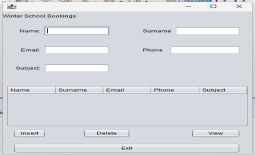
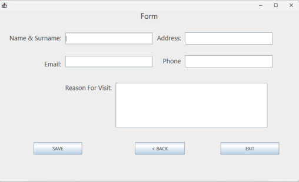
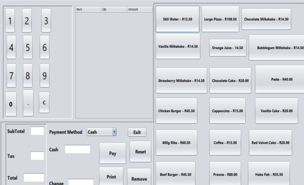
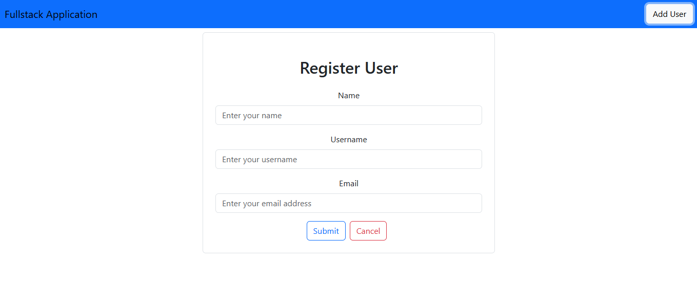

A full-stack application enabling students to register for winter school sessions while allowing admins to manage schedules, users, and session details.


A backend-driven app for managing members, community services, and local activities, featuring CRUD operations and secure authentication.

A desktop-based Point of Sale system developed in Java, supporting product management, sales tracking, and reporting features.

A full-stack web application that allows users to register, view, and manage their accounts.
Regional IT Technician
Shoprite/Checkers – Jul 2014 to Aug 2016
- Supported multiple retail branches across Gauteng
- Troubleshot hardware, network, and OS issues
- Configured LAN/WAN setups and supported VPN tools
- Managed user accounts, inventory, and Active Directory
First Line Application Support
NetsurIT – Jun 2012 to Jun 2014
- Provided IT service desk and backup support
- Administered users, servers, and OS reloads
- Managed SharePoint, antivirus, and patch processes
System Development (NQF 6)
Boston City Campus – Jan 2022 to Dec 2024
Focus: Java, Databases, Web Services, Software Engineering
System Support (NQF 5)
Dept. of Higher Education and Training – Jan 2017 to Dec 2017
Microsoft Certified Technology Specialist (MCTS)
Torque IT – Jan 2012 to Dec 2012
Matric (2006)
Pretoria Technical High School
- Java, Spring Boot, RESTful APIs, JPA
- HTML, CSS, JavaScript, Bootstrap/Tailwind, React.js, Wordpress
- MySQL, Git, GitHub, CRUD
- CI/CD pipelines, Docker (Basics)
- Stanford Pataka (NetsurIT) - 063 949 0678
- Vijay Pema (Shoprite/Checkers) - 082 959 9592